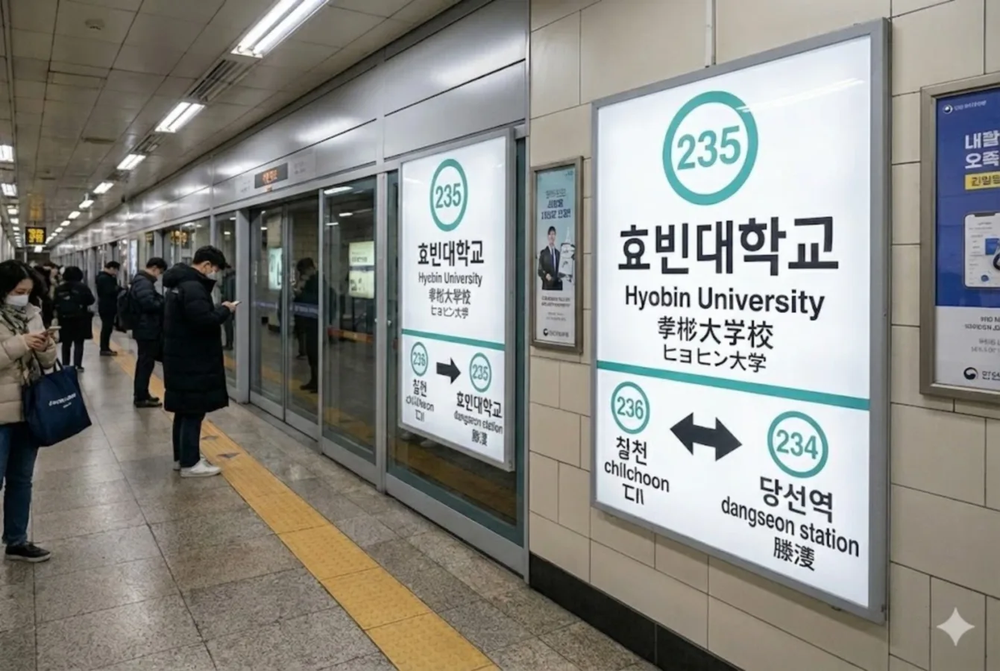

효빈 도시철도 2호선 235번 역이다. 효빈광역시 서구 당선동 231-2 지하에 소재한다. 효빈광역시 비환승역 이용객 순위 **당당한 2위**를 차지하고 있는 거대 대학 역이다. 7호선 트램이 생기면서 사실상 환승역이 됐지만 무시하자.
역명대로 효빈대학교 캠퍼스 정중앙 지하 깊숙한 곳(심도 40m)에 박혀 있다. 지옥의 에스컬레이터 시식 가능. 캠퍼스 자체가 워낙 광활해서 역 주변에만 3개의 지하철 정거장이 있지만, 공과대학과 교통대학 학생들에게는 이 역이 구원 그 자체다. 교내 모노레일과도 연결되어 있어 접근성이 매우 뛰어나며, 학생들의 만족도가 하늘을 찌른다. 사범대생들은 여기서 내려도 한참 걸어야 해서 눈물을 흘린다 카더라.
|
2
효빈대역 출구 정보
|
||
|---|---|---|
| 번호 | 주요 시설 및 방향 | 비고 |
| 1 | 7호선 효빈대입구역 방면 | 트램 환승 가능 |
| 2 | 효빈대 대학본부, 대학로지하상가 진입로 | |
| 3 | 효빈대 학생회관, 상과대학 | |
| 4 | 효빈대 박물관 | |
| 5 | 효빈대 예술대학 | |
| 6 | 효빈대 학생복지타운 | |
| 7 | 효빈대 기숙사 아파트, 보건진료소 | |
| 8 | 효빈대 대운동장 | |
연도별 일평균 승하차 인원 통계다. 2022년 전면 대면 수업 전환 이후 이용객이 떡상했다. 좀비 떼가 따로 없다.
| 효빈대역 이용객 통계 | ||
|---|---|---|
| 연도 | 일평균 이용객 | 비고 |
| 2020년 | 19,616명 | 코로나 원격수업 여파 |
| 2021년 | 20,826명 | |
| 2022년 | 35,178명 | 대면 수업 재개 |
| 2023년 | 37,020명 | |
| 2024년 | 36,932명 | 비환승역 이용객 2위 |

| 당선 ↑ | ||||
| 하 | ㅣ | ㅣ | 상 | |
| ↓ 칠천(완행) / 중앙로(급행) | ||||
| 상 | 2 효빈 도시철도 2호선 (완행/급행 공용) | 북효빈역 · 시청 · 고송교차로 · 당선(급행) 방면 (급행 정차) |
| 하 | 2 효빈 도시철도 2호선 (완행/급행 공용) | 중앙로(급행) · 월천 방면 (급행 정차) |
| 구분 | 정류소명 | 노선 번호 |
|---|---|---|
| 순방향 | 효빈대역 | 6, 18, 27, 8, 10, 129, 172, 191, 219, 261, 2222 |
| 역방향 | 효빈대역(건너편) | 06-1, 81, 72, 08-1, 10-1, 129, 712, 911, 129, 621, 2222R |
효빈광역시 서구의 대학로 지하를 약 420m 길이로 잇는 특수 목적형 지하도상가. 관할 주체는 효빈도시공사와 효빈대학교 사무국이 손을 잡은 공동 운영 체제로, 일반적인 시내 지하상가와는 확연히 다른 학내-도시 연계형 특화 인프라다.
약 420m의 짧지 않은 구간 동안 대학생들의 지갑과 위장을 저격하는 알짜배기 점포들이 빽빽하게 들어차 있다.